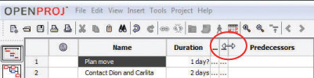
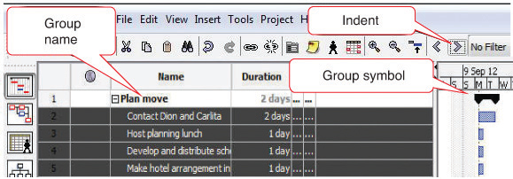
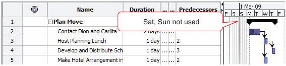
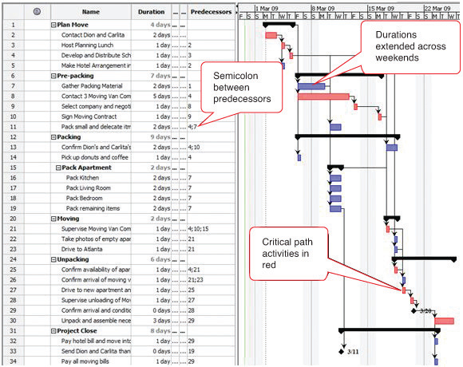

General purpose software such as word processing or spreadsheet programs are not capable of managing changes in relationships between activities or determining the critical path. They might suffice for the simplest projects, but more sophisticated interactive programs are needed for determining the effects of changes to interconnected activities. Small projects performed by groups with limited budgets can use open-source software such as OpenProj.
To complete this exercise, you must have permission to download and install software on your computer or use a computer that has OpenProj installed on it.
Complete the exercise by following these instructions:
Open a web browser and go to http://openproj.org. The program may be downloaded from this site, as shown in Figure 8.18 "Single User and Collaborative Versions".
Figure 8.18 Single User and Collaborative Versions

Source: Courtesy of Serena Software.
OpenProj is an open-source project management software that resembles Microsoft Project.
Open Windows explorer or your file finder program, locate the file you downloaded, and then double-click on it. Run the installation program and follow the directions on the screen.
Figure 8.19 Single User and Collaborative Versions
Source: Courtesy of Serena Software.
In the Manager box, enter your name. The current date will display in the Start Date box by default. Your date will differ from the example shown in Figure 8.20 "Identify the Project and Its Manager".
Figure 8.20 Identify the Project and Its Manager

Source: Courtesy of Serena Software.
Select cells B3 through C36, as shown in Figure 8.21 "List of Activities and Their Durations Selected in a Spreadsheet".
Switch to the OpenProj window. In row 1, below Name, click the empty box. Paste the content. (Use CTRL+V in Windows.) The activities and their durations are placed in the project window, as shown in Figure 8.22 "List of Activities and Their Durations Pasted into OpenProj".
Figure 8.22 List of Activities and Their Durations Pasted into OpenProj

Source: Courtesy of Serena Software.
In OpenProj, move the pointer to the vertical line to the right of the Start column heading. Drag this line to the left to minimize the width of the Start column. Repeat this process to minimize the width of the End column to minimize both columns, as shown in Figure 8.23 "Reduce Size of Start and End Columns".
Figure 8.23 Reduce Size of Start and End Columns
Source: Courtesy of Serena Software.
On the toolbar, click the Indent button. The four selected activities are indented as subordinate activities, and the activity in the row above becomes the group name. A black group symbol spans the group in the chart at the right, as shown in Figure 8.24 "Group Defined".
Figure 8.24 Group Defined
Source: Courtesy of Serena Software.
In the Predecessor column, in rows 3–5, type 2, 3, and 2.
The Gantt chart at the right adjusts the positions of the bars automatically and connects them with arrows to indicate their finish-start relationship, as shown in Figure 8.25 "List of Activities and Their Durations Selected in a Spreadsheet". Notice that Saturdays and Sundays are gray. They are not included as workdays. This will be addressed in a later step.
Figure 8.25 List of Activities and Their Durations Selected in a Spreadsheet
Source: Courtesy of Serena Software.
Fill in the remaining predecessors. Refer to the Predecessors column on the John’s Move worksheet or Figure 8.25 "List of Activities and Their Durations Selected in a Spreadsheet" . Notice where two predecessors are indicated, they are separated by a semicolon. Notice that activities that span the weekend days are extended by two days, as shown in Figure 8.26 "Bar Chart Showing Durations and Relationships".
Figure 8.26 Bar Chart Showing Durations and Relationships
Source: Courtesy of Serena Software.
Review your work in OpenProj and use the following rubric to determine its adequacy:
| Element | Best | Adequate | Poor |
|---|---|---|---|
| File name | Ch08StudentName.pod | Ch08StudentName.pod | Used a different name |
| Use dedicated project management software to manage changes to the WBS | Activities imported from Excel; correct groups; correct predecessors; dates will differ from figures | Same as Best | Mistakes with multiple predecessors; incorrect groupings |
Review your work in Ch08OpenProjStudentName.doc and use the following rubric to determine its adequacy:
| Element | Best | Adequate | Poor |
|---|---|---|---|
| File name | Ch08OpenProjStudentName.doc | Same name saved as .docx file | Used a different name |
| Use dedicated project management software to manage changes to the WBS | Three screen captures that show the development of the WBS in OpenProj | Same as Best | Missing screens or lack of student name in first screen |
Some advanced spreadsheet programs such as Microsoft Excel can sort tables of text and data. If the text is used as category labels, the sorting feature can be used to bring all the same type of expenses together, after which they can be subtotaled by category. The individual rows in each category can be hidden, and the category text and a subtotal for each column that contains numeric data such as durations or costs are displayed. This feature may be used to manage the costs or durations associated with each item in a work breakdown structure for a low-complexity project.
Create a WBS using the subtotal and outline features of Microsoft Excel 2007:
Under At each change in click the arrow button. The program shows a list of column headings, as shown in Figure 8.27 "Subtotal Dialog Box".
In the Subtotal dialog box, under Add subtotal to, next to Duration, click the check box. Click to remove any other check boxes under Add subtotal to if necessary. The durations will be summed for each group. Refer to Figure 8.28 "Subtotal Dialog Box Set to Sum the Durations for Each Type of Group".
In Ch08JohnsMove.xls, in the Subtotal dialog box, click OK. Subtotals are inserted below each type of group label, as shown in Figure 8.29 "Subtotal Dialog Box Set to Sum the Durations for Each Type of Group".
In Ch08JohnsMove.xls, at the upper left corner of the worksheet, click the number 2. The detail of each type of group is hidden and the subtotals are displayed, as shown in Figure 8.30 "WBS Subtotaled and Collapsed".
Review your work and use the following rubric to determine its adequacy:
| Element | Best | Adequate | Poor |
|---|---|---|---|
| File name | Ch08WBSExcel2007StudentName.doc | Same as Best | Chapter number or student name missing |
| Use the outline and subtotal features in a spreadsheet to create a low-complexity work breakdown structure | Name and date in first row; three screen captures that show the use of subtotal and outline | Same as Best | Name not in first line; name not shown in screen captures |
Advanced word processing software includes an outlining feature that allows the user to work in an outline format with collapsible headings. This feature may be used to define a work breakdown structure in a low-complexity project.
Create a WBS using an outline in Microsoft Word 2007:
Type John’s Move and then press Enter. The text is formatted using the title style as shown in Figure 8.31 "Title Style".
On the Home tab, in the Styles group, click Heading 2. Type Contact Dion and Carlita and press Enter. Repeat this process to enter the following items formatted as Heading 2. Refer to Figure 8.32 "Title, Body Text, Heading 1, and Heading 2".
Type Phone numbers are: Dion 555-0125, Carlita 555-0234. Observe that the additional text is formatted in normal style, similar to the name and date, as shown in Figure 8.33 "Screen Capture and Phone Numbers Added".
Use this process to fill in the remaining items in the WBS, as shown in Figure 8.34 "WBS with Three Levels", using heading styles 1, 2, and 3.
On the View tab, in the Document Views group, click the Outline button. Change the zoom, if necessary, to display all the document text, as shown in Figure 8.35 "WBS in Outline View". Each heading is also formatted with a corresponding outline level of the same number.
In Ch08WBSStudentName.docx, on the Outlining tab, in the Outline Tools group, click the Show Level button, and then click Level 2. Text that is formatted with Headings 1 and 2 are displayed while the title, normal text, and lower-level headings are not. Plus signs indicate the presence of hidden text, as shown in Figure 8.36 "Display of Levels 1 and 2".
Review your work and use the following rubric to determine its adequacy:
| Element | Best | Adequate | Poor |
|---|---|---|---|
| File name | Ch08OutlineWord2007StudentName.doc | Same as Best but in .docx format | Chapter number or student name missing |
| Use the outline feature in a word processor to create a low-complexity WBS | Name and date on first line; three screen captures that show the development and use of the WBS in Word 2007’s outline form using Heading styles 1, 2, and 3 | Same as Best | Missing information or screens |
| File name | Ch08WBSStudentName.docx | Same as Best | Chapter number or student name missing |
| Use the outline feature in a word processor to create a low-complexity WBS | Title style applied to the first line; normal style used for name, date, and phone numbers; heading styles 1, 2, and 3 used as directed; can be collapsed and expanded using the Outline view | Same as Best | Incorrect styles applied to some lines |